Genel Bilgiler
Bu iletişim kutusu aracılığıyla, bir eksene göre KM ve mesafelerle, iki eksene olan mesafelerle veya bir eksenin diğeri üzerindeki dikmeleriyle analitik olarak tanımlanan noktaların X, Y koordinatlarında veya aplikasyon verileri (azimut, mesafe) olarak hesaplanması imkanı sunulur. İsteğe bağlı olarak, hesaplamalar, projeksiyon türüne göre bazların anamorfoz katsayısını dikkate alabilen bir dizi baza göre yapılabilir.

|
Bu menüye YATAY GÜZERGAH'tan erişim, aynı oturumda en az bir kez eksen hesaplaması yapılmasını gerektirir. |
LİSTELER menüsünden, eksenlerin geometrisiyle ilgili çeşitli hesaplamaların daha hızlı bir şekilde elde edilme imkanının yanı sıra, arazi ölçüm cihazlarına doğrudan aktarım imkanının da sunulduğunu hatırlatmakta fayda var.
Yatay güzergah aplikasyon menüsü, noktaların tanımı için bir dizi liste oluşturmaya olanak tanır. Her liste, bir dizi başlık verisi ve farklı kesimleri veya hesaplama bölgelerini tanımlamak için bir dizi satır içerir.
[Kaydet] ve [Yükle] düğmeleri, tanım listelerini .rep uzantılı dosyalara kaydetmeyi ve bu dosyalardan geri yüklemeyi sağlar.
Üç aplikasyon prosedürü mevcuttur:
- Eksen A üzerinde ölçülen bir eşit aralığa ve eksen A'ya olan mesafelere göre nokta serileri: Örneğin, eksen 1'in 3 metre sağına paralel bir çizgi üzerinde her 20 m'de bir noktalar. Eksen B, 0 olmalıdır.
- Eksen A'ya dikmelerin eksen B ile kesişimi:
Örneğin, eksen 1'in 0, 20, 40, 60,... KM'lerinin eksen 2 üzerine yansıtılması (bu nedenle, iki eksen verisi kullanarak aplikasyon söz konusudur).
- Eksen A ve B'ye paralel veya yaklaşık paralel çizgilerin kesişimi (bu da iki eksen verisi kullanarak bir aplikasyon elde edilmesini sağlar).
Eğer listelerden herhangi birinde sonucun aplikasyon verileriyle verilmesi gerekiyorsa, bir baz tanım listesi de eklenmeli ve her satırda farklı bir çift aplikasyon bazı tanımlanmalıdır.
DOĞRUSAL YAPI modülü, her biri yüzlerce komut satırı içerebilen çok sayıda listeyi aynı anda hesaplayabilir ve tek bir dosyada saklayabilir. Aynı dosyada, özel baz dosyalarına ek olarak sınırsız sayıda aplikasyon bazı da tanımlanabilir.
Her Listenin Başlık Verileri
| [LİSTE: i /n] |
Mevcut listenin i numarasını ve mevcut n toplamını içerir. Bir LİSTEDEN diğerine atlamayı sağlar. Mevcut LİSTE sayısından daha büyük bir numara verilirse, sonuncusuna ardışık bir numara ile yeni bir LİSTE oluşturur.
Listeler arasında gezinmek için [-] ve [+] düğmelerimiz bulunmaktadır.
|
| [Tıkla] [Klavye] |
Grafik elemanların, eksenlerin ve bazların seçim modları arasında geçiş yapar: elemanı fare ile işaretleyerek veya numarasını klavye ile yazarak.
|
| SONUÇ |
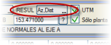Sonuçların nasıl elde edileceğini belirler ve aşağıdaki olanakları sunar:
- Sonuç, kartezyen koordinatlarda (X,Y) elde edilecektir.
- Listeler, sonuçları önceden tanımlanmış bazlara göre azimut ve mesafe olarak sunacaktır (Az,Mes).
|
| UTM |
Etkinleştirilirse, mesafe hesaplamaları anamorfoz katsayısından ve Yapılandırma → Koordinat Referans Sistemi menüsüyle belirtilen telafilerden etkilenecektir:
- Küremsellik ve kırılma
- Kirişten yaya geçiş
|
- Deniz seviyesine indirgeme
- UTM düzlemine geçiş
|
Bu telafiler ters yönde uygulanır. Aplikasyon menüsünde noktaların kotuyla çalışılmadığı için küremsellik ve kırılma çalışmaz.
|
| Sadece yatay |
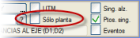Bu seçenek etkinleştirilirse, listeler, tanımlanmış olmaları koşuluyla, düşey kurp, kot ve eğim verilerini içerecektir. Ayrıca, eksen B ile eksen A'ya dikmelerin kesişimi prosedüründe, her iki eksen arasındaki kot farkı da listelenir.
|
| Boykesit öz. nkt. |
Düşey kurpların giriş ve çıkış teğetlerinin yanı sıra yüksek ve alçak noktalar gibi boykesitin özel noktalarının hesaplanmasını etkinleştirmeyi/devre dışı bırakmayı sağlar.
|
| Özel nkt. |
Yatay güzergahın özel noktalarının (teğetlik noktaları) listelerde hesaplanmasını etkinleştirmeyi/devre dışı bırakmayı sağlar.
|
| Makasları Hariç Tut | Bu seçenek etkinleştirildiğinde, makas bölgesindeki KM'ler hariç tutulur. |
| Olaylar |
Etkinleştirildiğinde, arazinin enkesit oluşturma menüsünde etkinleştirilen ENKESİT OLUŞTURULACAK OLAYLAR'a karşılık gelen her KM'de bir nokta hesaplanır.
|
| EKSEN A |
Nokta tanımı için kullanılan birinci eksenin numarası. Seçim, grafiksel veya sayısal olarak yapılabilir (aktif seçim moduna göre).
|
EKSEN B
|
Sadece iki eksen verisi kullanarak aplikasyon durumunda kullanılır, seçimi de grafiksel veya sayısal olarak yapılabilir (aktif seçim moduna göre). |
Aplikasyon Bazlarının Tanımlanması
Eğer aplikasyon bazları ile çalışılmak isteniyorsa, o zaman aplikasyon satırları gezgininin üzerindeki düğme ile belirtilmelidir, bu durumda alt kısımda bu bazların bildirilmesi ve yönetimi için bir tablo açılır:
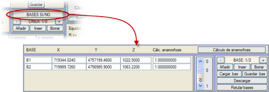
Her baz için bir tanımlayıcı ad, üç koordinatı (grafiksel veya sayısal olarak verilebilir) ve baza atanan ve UTM seçeneği seçiliyse kullanılacak olan anamorfoz katsayısı bildirilmelidir.
[Anamorfoz hesapla] düğmesi, koordinat referans sistemine karşılık gelen menüde görünen verilere bağlı olarak her baz için anamorfoz katsayısını otomatik olarak hesaplar:
Anamorfoz katsayısı = (Genel ölçek faktörü) × K’.
(K’ bazın koordinatlarına ve hedef dilime ve hedef elipsoide bağlıdır)
Bazlar, kaydedilebilir ve .bas uzantılı dosyalar aracılığıyla yüklenebilir. Ayrıca, coğrafi koordinatlardaki bir dosyadan bazları yüklemek de mümkündür. Bu dosya yüklendiğinde, program bazları artan bir şekilde adlandırır ve gözlem alanında bazın orijinal adını belirtir. [Kaldır] düğmesi, yüklenen tüm bazları siler.
[Bazları etiketle] düğmesine basıldığında, EDM'ye her baz için konumunu işaretleyen bir çarpı işareti ve bazın kotu ile bir sembol (S43) eklenir; sembolün altına bazın adı mevcut metin stili ve boyutuyla etiketlenir.
Aplikasyon Veri Listeleri ve Satırları
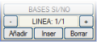Her liste içinde, veri satırlarının oluşturulması, silinmesi ve gezinmesi, iletişim kutusunun sağ tarafında bulunan gezgin seçenekleriyle yapılır. [-] düğmesiyle program, mevcut satırdan bir önceki satıra konumlanır, [+] ile ise bir sonraki satıra geçer. İki düğme arasında, mevcut listenin kaç satırı olduğu ve mevcut listenin içindeki mevcut satırın numarası bildirilir.
[Ekle] düğmesi sonda yeni bir satır oluştururken, [Araya Ekle] ile mevcut olanın önüne yeni bir tane oluşturulur. [Sil] düğmesi ile mevcut satır silinir. Eğer bir listenin tek satırı silinirse, tek liste olmadığı sürece liste de silinir.
Bir satırın veri değişikliği, iletişim kutusundan yapılır ve aşağıdaki veri girişlerini kabul eder:
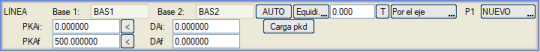
[Baz 1]
[Baz 2] |
Satırda tanımlanan kesim için aplikasyon bazlarının adı. Sadece sonuç (Az, Mes) olarak istendiğinde doldurulmalıdır. Bu durumda Baz 1 ve Baz 2 değerleri var olmalı, farklı olmalı ve bazlar ilişkisinde yer almalıdır. Bunları seçme şekli, bildirilmek istenen baz üzerine çizimde tıklamaktır.
|
| [OTO]
|
Tanımlanmış bazlara (varsa) ve aşağıdaki kriterlerden birine göre otomatik olarak bir dizi kesim veya veri satırı oluşturmayı sağlar:
- İzdüşüm KM'sine göre: Bazlar, aplike edilecek eksen üzerine yansıtılır, böylece farklı kesimler oluşturulur, öyle ki her biri, bazların yansıtıldığı iki KM arasındaki kesimin aplikasyonuna karşılık gelir (referans ve gözlem). Eğer tüm bazlar eksenin dışına yansıtılırsa (başlangıç KM'sinden önce veya bitiş KM'sinden sonra), o zaman en yakın iki tanesi alınır.
Bu kriter, bazların mevcut listenin A ekseni üzerindeki yansıtıldıkları KM'ye göre yeniden sıralanmasını sağlar ve her ardışık baz çifti için iki veri satırı (doğrudan ve ters aplikasyon) oluşturur, Sadece doğrudan veriler seçeneği etkin kalmadıkça; bu durumda her kesim için sadece doğrudan aplikasyon oluşturulur, ters veya karşılıklı olan değil.
- En kısa mesafeye göre: Her kesim, o kesime en yakın baza göre oluşturulur.
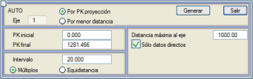
Belirlenen kritere ek olarak, program ayrıca eksene maksimum mesafeyi de dikkate alır, öyle ki belirtilenden daha büyük bir mesafede olan bazlar aplikasyon listeleri yapmak için dikkate alınmaz.
Bu parametreler belirlendikten sonra, [Oluştur] düğmesine basıldığında, otomatik olarak oluşturulan listelerin zaten gözlemlenebildiği aplikasyon iletişim kutusuna geri dönülür.
|
[Eşit Ar.] /
[Katlar]
|
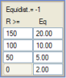Aplike edilecek noktaların tanımı için A ekseni üzerinde ölçülen eşit aralık. Eğer 0 değeri girilirse, o zaman sadece PKAi'de bildirilen KM noktasında hesaplama yapılır. Eğer -1 değeri bildirilirse, o zaman farklı yarıçap aralıkları için dört adede kadar farklı eşit aralık tanımlamak mümkündür. Varsayılan olarak, bu tablo aşağıdaki değerleri içerir:
150 m'ye eşit veya daha büyük yarıçaplar için 20 m.
150 m'den küçük ve 100 m'ye eşit veya daha büyük yarıçaplar için 10 m.
100 m'den küçük ve 50 m'ye eşit veya daha büyük yarıçaplar için 5 m.
50 m'den küçük yarıçaplar için 2 m.
[T] düğmesi, tipik bir dizi aplikasyon aralığı sunar.
Eğer eşit aralık yerine katlar ayarlanırsa, o zaman aplike edilecek KM'ler bu değerin katları olacaktır. Örneğin, eğer PKAi olarak 324.578 bildirilirse, her durumda 20 m'lik bir aralık için ve eksenin başlangıcından itibaren aplike edilecek KM'ler şunlar olacaktır:
Eşit Aralıklar
|
324.578
|
344.578
|
364.578
|
384.578
|
...
|
Katlar
|
324.578
|
340.000
|
360.000
|
380.000
|
...
|
Aplike edilecek noktalar, eksenden (sabit veya değişken) bir mesafede olduğunda, aralık değeri eksen üzerinden alınabilir veya ötelenmiş üzerinden ölçülebilir. Bu ikinci durumda, listede, ötelenmiş eksen üzerinden ölçülen noktalar arasındaki mesafenin aralığa denk geldiği eksen üzerindeki KM'ler görünecektir, son nokta hariç, bu bir veridir. Bu yöntem, örneğin, eksene yaklaşık paralel bir direk hattının verilerini elde etmek için uygulanabilir.
|
Pkd Yükle
|
Bir .pkd dosyasını bir aplikasyon listesine yükleme imkanı. Her km ve mesafe değeriyle, mevcut listeye yeni bir satır eklenir.
|
P1
|
Aplikasyon satırının ilk noktasını ifade eder ve aşağıdaki olanakları sunar:
- Yeni: Kullanıcı, aplikasyon satırının ilk veri noktasını tanımlamalıdır.
- Önceki: Program, kesimin başlangıç noktası olarak, bir önceki satırda hesaplanan son noktayı alacaktır. Örneğin, KM 0'dan 825'e kadar her 25 metrede bir ve 825'ten 1000'e kadar her 5 metrede bir noktaları hesaplamak isteniyorsa, bu seçenekle ikinci satırda 825 değerini tekrarlamak gerekmez.
|
PKAi
PKAf
PKBi
PKBf
DAi
DAf
DBi
DBf
|
1 ve 2 numaralı aplikasyon prosedürlerinde (bir eşit aralığa göre nokta serileri ve eksen A'ya dikmelerin eksen B ile kesişimi), PKAi verisi, hesaplamanın başlangıç KM'sine karşılık gelir. 3 numaralı prosedürde (eksen A ve B'ye paralel çizgilerin kesişimi), bu durumda çözümü ayırt etmek için hizmet eden, eksen A üzerindeki yaklaşık KM'dir.
PKAf, kullanılan eksen A üzerindeki kesimin son noktasının KM'sidir. Bu alan 0 olarak bırakılırsa, "eksen sonuna kadar" olarak yorumlanır.
DAi, PKAi noktasının A eksenine olan mesafesidir (negatif değerler sol tarafı belirtir).
DAf, PKAf noktasının eksene olan mesafesidir. Bu durumlarda, eğer DAi, DAf'den farklıysa, ara noktaların eksene olan mesafesi, KM'ye göre PKAi noktasındaki DAi ile PKAf'deki DAf arasında doğrusal olarak değişecektir.
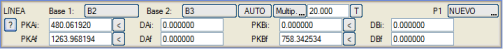
2 ve 3 numaralı prosedürlerde, çizgilerin eksenlere nasıl yaklaşıp uzaklaştığını tanımlamayı sağlayan [PKBi], [DBi], [PKBf] ve [DBf] düğmeleri de görünür. 3 numaralı prosedürde, [PK1f], çözümü aramaya başlamak için eksen B üzerindeki yaklaşık KM'yi de bildirir.
A ve B eksenlerinin başlangıç ve bitiş KM'leri, yanındaki [<] düğmesine basılarak grafiksel olarak verilebilir.
|
| MESAFE |
1 numaralı prosedürde, nokta dizisi temel komuta birkaç paralel üzerinde hesaplanır. Artan bir dizi mesafe verilmesi gerekir; örneğin, ilk 3 alanı -3.5, 0 ve 3.5 değerleriyle doldurarak, bu mesafelerde üç nokta serisi hesaplanacaktır.
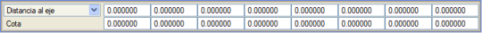
Aşağıdakileri seçmemizi sağlayan bir seçicimiz var:
- Eksene mesafeler: 8 değer tanımlamayı sağlayan şimdiye kadarki yöntemdir.
- Eşit aralıklar: Eksenin yanı sıra her iki tarafta aplike edilecek nokta sayısını, noktalar arası eşit aralığı ve sağ/sol/her iki tarafı tanımlamayı sağlar. (Her iki taraftaki nokta sayısı sınırsızdır).
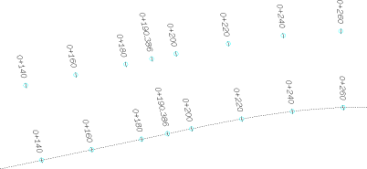
|
Kot
|
MESAFELER satırının altında, bu noktalar için kotlar tanımlama imkanı vardır. Eğer sıfırdan farklı bir değer yazılırsa, listede kot, kırmızı kot yerine bu değere sahip olacak ve çizim seçeneklerinde, işaretler ve çizginin noktaları da bu kotu alacaktır.
|
İki eksen verisi kullanarak aplikasyon
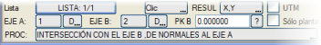İki eksen kullanarak aplikasyon hesaplaması durumunda, PROS düğmesine basıldığında değiştirilen iki olası prosedür vardır:
- Eksen A'ya dikmelerin eksen B ile kesişimi:
Örneğin, eksen 1'in 0, 20, 40, 60,... KM'lerinin eksen 2 üzerine yansıtılması. Bu durumda A ekseni 1 ve B ekseni 2'ye karşılık gelecektir.
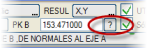 Aynı A ekseni bölgesi için B ekseni ile birden fazla kesişim olduğunda, elde edilen çözüm, PK B alanında belirtilen KM'ye en yakın değerlere sahip olanıdır. Bu alan, dolayısıyla, A ekseninin tek bir KM'sinden çizilen dikmeyle kesişimi olan farklı B ekseni bölgelerini ayırt etmeyi sağlar. Yanındaki [?] düğmesi, B'nin başlangıcından A'ya yansıtılan KM'yi otomatik olarak hesaplamayı sağlar.
Program, bir B ekseni seçilir seçilmez bu moda geçer. Listeye, ilgili seçenek etkinse, A ekseninin düşey güzergah özel noktaları da eklenir. Ayrıca, ilgili KM'lerde yer alan eksenlerin deverleri hakkında bilgi sunar, ayrıca her noktada her iki eksene yansımaya karşılık gelen iki yarıçap sunulur.
B ekseni üzerindeki noktaları aramak için yaklaşık KM. Bu değeri, sadece A ekseninden çizilen dikmelerin B ekseni ile kesişim noktaları durumunda girmek gerekir, çünkü bu, A ekseninin tek bir KM'sinden çizilen dikmeyle kesişimi olan farklı B ekseni bölgelerini ayırt etmeyi mümkün kılar. Diğer durumlarda, bu değer çalışmaz.
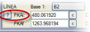PKAi alanının yanındaki [?] düğmesi, B'nin başlangıcından A'ya yansıtılan KM'yi otomatik olarak aramayı sağlar; bu değer manuel olarak da bildirilebilir. Eğer B noktasının KM'si 0 ise ve hesaplama yaparken hiçbir nokta elde edilemezse, program otomatik olarak bu KM'yi aramayı (mevcut liste için) çalıştırır ve hesaplamayı yeniden dener.
Eksen B ile kesişim, Eksen A'ya dikmelerin hesaplanması için iki soru işaretini [?](PKB ve PKAi....) basmak tavsiye edilir.
Bu prosedür için, çift kırmızı kot durumunda, A ve B eksenlerinin her birinde hangi (S/L) ikisinin kullanılmak istendiğine karar verilebilir.
Liste örneği:
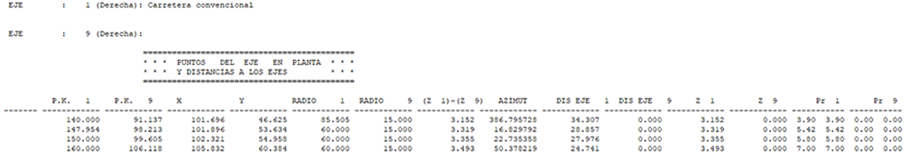
- 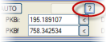 Eksen A ve B'ye paralel veya yaklaşık paralel çizgilerin kesişimi: Önceki durumdan, PROC (prosedür) düğmesine basıldığında bu moda geçilir.
Eğer bu prosedürle hesaplama yaparken program herhangi bir çözüm bulamazsa, ekranda grafiksel olarak tıklayarak verilmesi gereken yaklaşık bir çözüm isteyen [?] düğmesi kullanılmalıdır. Verildikten sonra, PKAi ve PKBi alanları, üzerine tıklanan noktanın yansıtıldığı KM'lerle doldurulur ve hesaplama yeniden denenir.
Hesaplama
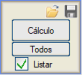[Hesaplama] düğmesine basıldığında, program tanımlanan tüm listelerin hesaplamasını yapar, elde edilen noktaları ekranda grafiksel olarak temsil eder ve  Listele düğmesine basıldığında ekranda görüntülenebilen listeyi cpun.res oluşturur. Listele düğmesine basıldığında ekranda görüntülenebilen listeyi cpun.res oluşturur.
[Tümü]: tüm eksenler için hesaplama ve liste oluşturur.
Gruplara Göre: aktif gruplardaki eksenler için hesaplama ve liste oluşturur.
Eğer bazlarla bir aplikasyon hesaplaması yapılıyorsa, o zaman önceden sonucun azimut ve mesafe olarak olacağı belirtilmelidir. Bu durumda ve [Hesaplama] düğmesine basıldıktan sonra, bazlardan gelen görseller ekranda gösterilir:
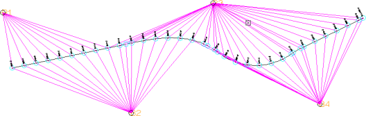
[Tümü] düğmesi, birinci listede bildirilen eşit aralık değerine göre tüm aktif eksenler için bir aplikasyon listesi oluşturur.Bu seçenek, tüm eksenleri içeren bir cpun0.res dosyası ve her eksen için ayrı bir liste oluşturur: cpun1.res, cpun2.res,...
Eğer aplikasyon bazlarla ve sonuçların azimut ve mesafe olarak ayarlanmışsa, o zaman her bir eksenin noktalarını hesaplamadan önce [OTO] seçeneği otomatik olarak çalıştırılır.
Hesaplanan tüm noktalarla otomatik olarak bir ISreplanteo.toc dosyası oluşturulur. Bu dosya, NXYZ Tablosu aracı tarafından, [Dosyadan...] seçeneğini kullanarak bu noktaların bir koordinat tablosu oluşturmak için kullanılabilir.
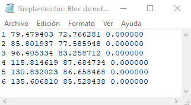

Listeler
X,Y,Z ile aplikasyon listesi
cpun.res listesinde, eğer boykesitte veri varsa ve PROJE tablosunda hesaplanan eksen için bir arazi enkesit dosyası varsa, her KM'ye karşılık gelen arazi kotu da görünecektir. Ayrıca deverler, kotlar, eksene mesafeler,... gibi veriler de gösterilir.
|
Eğer sadece yatay güzergahla ilgili veriler elde edilmek isteniyorsa, o zaman iletişim kutusundaki Sadece yatay seçeneği etkinleştirilmelidir.
|
|
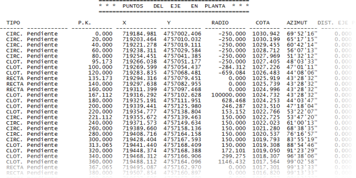
Aplikasyon bazları kullanarak aplikasyon listesi
Aşağıdaki resim, bu tür bir listenin yorumlanmasını şematik olarak temsil etmektedir:
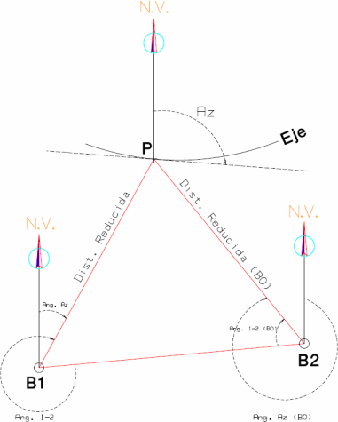>
Bazlardan bir aplikasyon yapıldığında (azimut ve mesafeleri listele), basitleştirilmiş bir liste de oluşturulur: biseccion.res
Aplikasyon Noktalarının Çizimi
Aplikasyon noktaları hesaplandıktan sonra, bu noktaların KM'lerini ve işaretlerini EDM üzerine etiketlemeyi sağlayan bazı küçük araçları kullanmak mümkündür. Bu araçlar, APLİKASYON dikey menüsünün [ÇİZİMLER] açılır alt menüsü altında bulunur ve şunlardır:
Eleman Etiketl. Modu
|
.ali uzantılı kütüphanedeki bir dizi dosya arasından birini seçmeyi sağlar. O andan itibaren eksenlerin güzergah elemanları, içinde tanımlanan stile göre etiketlenecektir.
|
Elemanları Etiketle
|
Seçilen etiketleme moduna göre istenen eksenin güzergah elemanlarının ana noktalarının otomatik olarak etiketlenmesini sağlar. Bu seçenek <Esc> tuşuna basılana kadar döngüseldir.
Her durumda, dikey menüdeki [ETİKETLEME] düğmesi, eksenlerin etiketlenmesi için çok daha kapsamlı bir iletişim kutusuna erişim sağlar.
|
KM
|
Bu seçenek, son hesaplanan dizinin KM değerlerini, tam sayılar için S35 tipi ve kesirli sayılar için S36 tipi sembol dizisi kullanarak plan üzerine yerleştirir. Örneğin, her 100 metrede bir ve eksenden belirli bir mesafede noktaların hesaplanması yapılabilir, KM'ler etiketlenir ve ardından her 20 metrede bir başka bir dizi hesaplanarak bu noktalar işaretlenir. Bu KM etiketleri ve işaretler, çizime EDM sembolleri olarak aktarılır, böylece daha sonra taşınabilir, kaldırılabilir,...
|
İşaret
|
Son hesaplanan dizinin her noktasına bir sembol oluşturur. Kullanılan sembol S11'dir. En yaygın kullanımı, eksen üzerine işaretler koymaktır (örneğin her 20 m'de bir).
|
Çizgi
|
Bu seçenek, son hesaplamanın noktalarını (bir eksen üzerindeki noktalar ve bir eksenin diğerine dikmelerinin izdüşümü) birleştirerek mevcut tipte bir çizgi oluşturur.
|
S500
S501
|
KM ve İşaret gibi çalışır ve KM'lerin etiketlenmesi için S500 veya S501 sembollerini kullanmayı sağlar.
|
Mesafe (S798)
|
Bu hesaplama yapıldığında, Çizimler->Mesafe(S789) aracını kullanmak mümkündür. Bu araç, iki eksen arasında hesaplanan mesafeyi, orta noktada ve alındığı yönle etiketler.
|
| Hücrelerle Etiketle |
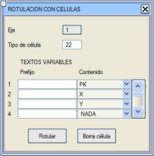Hücreler kullanarak yatay güzergahtaki eksenleri etiketlemeyi sağlar. Prosedür, bir eksen ve bir hücre tipi seçmekten ibarettir. Her bir değişken metne, her hücre oluşturulduğunda otomatik olarak girilecek içeriği yapılandırmak mümkündür. Bu değişken metinler için olası değerler şunlardır:
- Seçilen eksenin KM'si.
- X ve Y koordinatları.
- Eksene mesafe.
- Azimut.
- Kırmızı Kot Z
- Z
- Hiçbir şey (değişken metin boş bırakılacaktır).
- Kazık
Bu değerler, hücrenin ana ekleme noktasına referans olacaktır ve hepsine isteğe bağlı bir önek eklenebilir.
[Hücreyi sil] düğmesi ile, ardından tıklanan hücreler silinir.
|
Sil
|
Yapılan son çizimi siler.
|
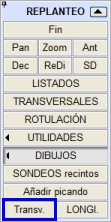Enkesit
Bu komut, aplikasyonda hesaplanan noktalara enkesitler keser. SAM yüzey kontrolü kutusunda tanımlanan model kullanılır, yüzeyler Harita, Üçgenleme, Grid SAM, TTP ile tanımlanmış olsun.
BOYKESİT
 Bu menüden, belirli bir araziye boykesit kesim dosyaları (.lon) oluşturulabilir. Kesim yüzeylerinin yapılandırılması, enkesitler için olduğu gibi SAM Yüzey Kontrolü'nden yapılır. Eğer TTP veya NDP tipi bir yüzey boyunca boykesitler çıkarılırsa ve Üçgenler seçeneği seçiliyse, üçgenlemede boşluklar varsa bunlar boykesitte temsil edilir ve hem Kırmızı Kotlar menüsünde hem de boykesitlerin çiziminde gösterilir. Bu menüden, belirli bir araziye boykesit kesim dosyaları (.lon) oluşturulabilir. Kesim yüzeylerinin yapılandırılması, enkesitler için olduğu gibi SAM Yüzey Kontrolü'nden yapılır. Eğer TTP veya NDP tipi bir yüzey boyunca boykesitler çıkarılırsa ve Üçgenler seçeneği seçiliyse, üçgenlemede boşluklar varsa bunlar boykesitte temsil edilir ve hem Kırmızı Kotlar menüsünde hem de boykesitlerin çiziminde gösterilir.
Hangi eksenlerden boykesit alacağımızı, ne kadar mesafede, ne kadar yarı genişlikte vb. tanımlayabiliriz. Ayrıca, boykesitimizi hangi KM aralığında elde etmek istediğimizi de tanımlayabiliriz.
Etkilenen altyapılarla kesişim için Boykesit kutucuğu etkinleştirildiğinde, bir altyapıyı (harita yüzeyi) temsil eden çizgilerle kesişimdeki verev açısı bilgisi .lon dosyasına dahil edilir. Bu bilgi ve çizginin parametrik tanımı (QA) ile, boykesitlerde ve KIRMIZI KOTLAR menüsünde kesişimi gerçek büyüklüğünde temsil etmek mümkündür.
Bu ana işlevin yanı sıra, bu menüde bazı araçlar sunulmaktadır:
Çizgi -> .lon
| Bir 3D çizgiden bir .lon dosyası oluşturur.
|
.pkz -> .lon
|
Bir .pkz dosyasından bir .lon dosyası oluşturur.
|
.lon -> .per
|
Bir .lon dosyasından bir .per dosyası oluşturur, belirtilen yarı genişliğe sahip tek bir yüzey oluşturarak.
|
.per -> .lon
|
Bir .per dosyasından bir .lon dosyası oluşturur, dosyanın ilk yüzeyini alarak.
|
Çizgi tipini yansıt -> .lon
|
Eksenin sağına ve soluna, maksimum bir mesafede ve eksene göre maksimum bir açıyla bulunan belirli bir tipteki çizgiler için iki .lon dosyası oluşturur. Eğer birkaç çizgi segmenti KM'lerde çakışırsa, eksene en yakın olan alınır.
|
Çukur sınıflandırması
|
|
|